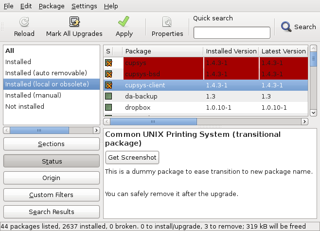

Last week, we learned to remove useless configuration files. This week, we’re going to take care of obsolete packages.
Last week, we learned to remove useless configuration files. This week, we’re going to take care of obsolete packages.
An obsolete package is a package who is no longer provided by any of the APT repositories listed in /etc/apt/source.lists (and /etc/apt/sources.list.d/). There can be multiple reasons why a package is no longer available in the repository (or at least not under the same name) :
- the upstream author stopped maintaining the software a long time ago, nobody else took over and the Debian maintainer preferred to remove the package from Debian. Usually there are alternatives in the Debian archive.
- the package was orphaned in Debian since a long time, nobody took over and it had very few users. The Debian QA team might have asked its removal.
- the latest version of the software might have been packaged under a new package name. Either because the amount of changes was so important that it was preferred to not upgrade automatically to the latest version (it has been the case with request-tracker and nagios, they both embed a version number in their package names), or simply because the maintainer wants to let the user install several versions at the same time (that’s the case for example with the Linux kernel, the python interpreter and many libraries).
- the software has been renamed, the maintainer renamed the packages and kept transitional packages under the old name for one release. Then the transitional packages have been removed.
In any case, it’s never a good idea to keep obsolete packages around: they do not benefit from security updates and they might cause problems during upgrades if they depend on other packages that should be removed to complete the upgrade.
You could blindly remove them with aptitude purge ~o (or aptitude purge ?obsolete) but you might want to first verify what those package are. There might be some packages that you have manually installed, that are not part of any current APT repository, and that you want to keep around nevertheless (I have skype, dropbox and a few personal packages for example). You can get the list with aptitude search ?obsolete…
With the graphical package manager (Synaptic), you can find the list of obsolete packages by clicking on the “Status” button and selecting “Installed (local or obsolete)”. You can then go through the list and decide for each package whether you want to keep it or not.

Follow me on Identi.ca, Twitter and Facebook. Or subscribe to this blog by RSS or by email.


We are in a position where Wheezy is getting resorted after the Squeeze release. My list of ‘obsoletes’ is therefore quite long [but includes stuff that is in Sid [youtube-dl for ex]]. Would it be prudent to wait a few days for things to filter down from Sid? I am also slightly concerned about stuff that is marked i[nstalled]A[utomatically]. The larger question is, how a do I as a user decide what is obsolete?
Thanks for these posts.
r7
If you only have squeeze in your sources.list, the list of obsolete won’t evolve much in the next few days. So I don’t see the point to wait. Something which is not in squeeze now won’t benefit from the stable security support by Debian.
You can decide to use the package from sid if you want but you must be aware of the difference and you might not be able to track the sid version of that package for a long time.
There’s no reason to be worried about “automatically installed” packages, they are dependencies (and “recommends”) of other packages that you have. They would be removed by “apt-get autoremove” if no manually installed package depended on them.
As for the larger question, you should be in a better position to know what you’re using or not.
If you have the word ‘testing’ in your sources.list instead of ‘squeeze’ you are leaving current Debian stable land these days and sailing to Wheezy ocean
Well, one obsolete package that I regret not having anymore is XMMS.
So, one might want to think long and hard about purging some of these old packages.
Try Audacious
Hi there,
Forty obsolete or local packages installed … … (bitmeteros, clamtk, ntfs-3g, … and 37 lib* that trust me I don’t know them at all).
If I am expected to know the resting 37 libraries in order to decide if I delete the packages or not … then I am not in a position to take advantage of your knowledge … thank you anyway.
Hello Ana, you can just mark those 37 libraries as automatically installed and they will be removed if they are no longer needed (by “apt-get autoremove” or automatically by aptitude).
Well … I managed to remove entropy from my local and obsoletes bucket. For me it’s been a step forward, I mean … I have never used Aptitude before and it seems to be a pretty powerful tool, even a bit stronger than Synaptic. I had the unconscious claim to be able to do almost whatever (I mean straightforward housekeeping issues) through a GUI tool … in this case Synaptic … but it was ok. Raphaël, do you have any idea if marking packages as ‘automatically installed’ (and deleting them if appropiated) is a feature to be implemented in Synaptic in the medium term ? … they may be fully focussed on ‘Ubuntu Software Center’ these days, but it would be such a nice feature for Synaptic. Thank you very much.
Ana, everything is already implement in Synaptic. Select a package and you can mark it as automatically installed with the menu entry “Package > Automatically installed” (it’s a checkbox).
And for deleting them, as I answered elsewhere in the comments, do it in the view “Installed (auto-removable)” that you can see when you select “Status” in the bottom left pane.
Wow !! … that’s great. I just looked at context menu entries. Thank you again.
My experience dealing with obsolete / local libraries:
Mark them to purge / remove. This may break some existing package depending on them. Hunt for those broken package (search for ~b in aptitude) and mark them for upgrade. Usually this will bring in upgraded equivalent of the obsolete package. If this does not work then cancel pending action. (So I can’t handle many obsolete package at a time)
(I use debian unstable and aptitude… I think things are similar with synaptic)
I would like to note the program “deborphan” here too, since it helps to clean up “unused” packages. But you should still double check before removing them.
“deborphan finds packages that have no packages depending on them.”
regards,
Ben,
Thanks for theese two posts. Learning – using – doing. I have two automatic installed packaged that apt-get autoremove does not take care of. So if I understand you correctly this means that they are pulled in because of another package that I have installed manually?
Andreas, yes, that’s it. You can always try to mark them for removal and you’ll see which package really depends on them (it might be that they are only “recommended”) because they will also be marked for removal.
This has been a good process for me [not yet completed]. I have now ditched ‘grip’ and discovered ‘jack’
It has meant that I have delved deeper into these packages and my obsoletes list is much smaller and is all marked ‘Automatically installed’. Further investigation awaits, but I now have a better knowledge of aptitude, apt-get and dpkg.
Keep ‘em coming…
r7
<> is it safe just to remove them all(that what i did:) )? i mean how would a novice know? thanks,
It depends on what you mean by “safe”. If you don’t notice any difference afterwards, then it was right to remove them.
If one of your applications disappeared, you might be disappointed. But then if it was obsolete, you’re better off looking for alternatives instead of keeping the old unmaintained application forever.
ok everything is still working though minus the k9copy which is a nice program i enjoyed – but no worries – i will seek alternatives.
i also ran apt-get autoremove after using Synaptic from console. did i need to do this or is this necessary for complete removal?
thanks,
Mark, you don’t need to go back to the console. In Synaptic, you can click on “Status” and in the views you get there’s one called “Installed (auto-removable)”.
You can mark them for purge here and it should not bring in any additional package to remove.
thanks.
i know this is off topic but since i have your attention: i have logitech usb mic/headset that i use with debian. it works but when i try to hear sound through chrome browser like watch youtube, it ONLY comes through my soundcard on motherboard. in other words, sound comes out of my desktop speakers when using browser. i also know that debian recognizes the headset because i have set my sound prefs to use only the usb audio. any hints would be great.
thanks again,
Sorry Mark, I have no idea why Chromium behaves differently than the rest of the system.
I chose the ‘bindly remove’ option. Consistently with that choice of mine aptitude removed oracle-xe… While that move all in all has my sympathy, it’s still annoying to have to reinstall. Thus I do not recommend to blindly remove obsolete packages.
Thanks for sharing your insights anyway.
To Mark. It might be because you uses Adobe Flash player for the video. Try to turn on HTML5 in YouTube and look at the video again. You can turn on/off HTML5 in this URL: http://youtube.com/html5
Adobe Flash uses Alsa sound system, not the newer PulseAudio. So that might be why you get the sound on different devices. There might be some advanced way of getting Flash using head phones in Alsa, but you could try some of the free Flash players instead of Adobe Flash.
Hello Anders,
Thank you for suggestion and I will give it a whirl and let you know how it goes.
i opted for html5 in youtube and set everything to usb audio in sound prefs but still no luck. chrome wants to play everything out of sound card on motherboard. i can try a free flash player next.
Did you right click on the video you played so you know you didn’t get Adobe Flash player?
when in html5, some videos dont work at all. chrome crashes. i guess i need to install at alt flash player so html5 pages run correctly?
Flash has nothing to do with HTML5. So there must be another problem.
Some videos are only in Flash video though. So even if you have HTML5 turned on, you have to use Flash video on them.
Start Chrome from a terminal and look what happens when you look at a video and Chrome chrashes.
i am using a beta version of chrome. maybe i should go to older version and try again? … I will try your suggestion too anders. thanks,
Thanks for the post. Does your information also apply to the Debian-derived Ubuntu? I have a number of packages that I had to install outside the apt scheme (using dpkg and a deb file) because they were not in the repositories e.g. the Canon MP540 printer package cnijfilter-common. These packages do not show as local/obsolete in aptitude or synaptic – in fact they do not show at all. What does show as local/obsolete is e.g. libcupsys2, which cnijfilter-common depends on and which is in fact in the repositories at the same version level (my other local/obsolete package is libdvdcss2 and it too is in the repositories at the same version level). All of the information for these deb-file-installed packages is indeed in /var/lib/dpkg/source correctly so I can’t understand what aptitude and synaptic are keying on to ignore these packages but claim libcupsys2 and libdvdcss2 as local/obsolete. I’m aware that libcupsys2 is a dummy package but that doesn’t appear to be an official dpkg field (and libdvdcss2 appears to be a normal package).
Sure they do apply to Ubuntu as well. I’m not sure if synaptic has some special feature hiding some of them… you can try with aptitude and see if you see them correctly.
/var/lib/dpkg/source doesn’t exist, “status” does and list installed packages, but “available” is not relevant in case you had this one in mind. libdvdcss2 can only be in a unofficial repository, are you sure it’s currently activated in /etc/apt/sources.list (and associated files in sources.list.d)?
Thanks very much for your reply (and, yes, I did indeed mean /var/lib/dpkg/status). I’ve been continuing my investigations and have learned a few things. First, the packages that I installed from deb files because they were not in the repos and which do not show in aptitude/synaptic as obsolete are all i386 packages. I’m running an amd64 system, and although these packages are correctly listed in the dpkg status file, anything non-amd64 seems to be ignored by aptitude/synaptic. Second, the other two files installed this way – libcupsys2 and libdvdcss2 – are in fact correctly shown by aptitude/synaptic as obsolete, because they are indeed not in the repos (but are amd64 or all). I had been using apt-cache show to investigate this, thinking that it only showed packages in the repos (from metadata cached in /var/cache/apt/pkgcache.bin), but apparently it will show a non-repo package if it’s installed (again, as long as it’s amd64/all). I’m playing with apt-cache policy now to investigate this. Third, it’s not always wise to remove an obsolete package – in my case (which is admittedly probably pretty rare), there are unlisted i386 packages that still depend on listed obsolete packages.